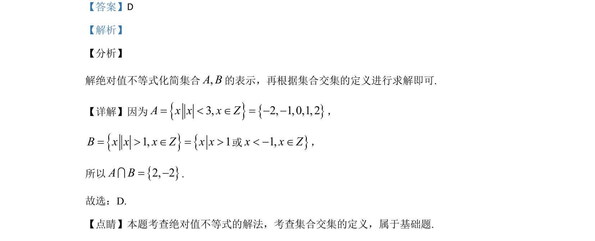

考点：绝对值不等式 交集运算
解绝对值不等式化简集合A和B，再根据交集定义求解。

📄 原 PDF 第 1 页：
素材/真题/吉林/2008-2024·（吉林）数学高考真题/2020年高考数学试卷（文）（新课标Ⅱ）（解析卷）.pdf
1.已知集合A={x||x|<3，x∈Z}，B={x||x|>1，x∈Z}，则A∩B=（ ） A. ÆB. {–3，–2，2，3） C. {–2，0，2} D. {–2，2}
【答案】D 【解析】 【分析】 解绝对值不等式化简集合,A B的表示，再根据集合交集的定义进行求解即可. 【详解】因为{}{}3, 2, 1,0,1, 2A x x x Z= < Î = - -， {}{1, 1B x x x Z x x= > Î = >或}1,x x Z< - Î， 所以{}2, 2A B= -I. 故选：D. 【点睛】本题考查绝对值不等式的解法，考查集合交集的定义，属于基础题.